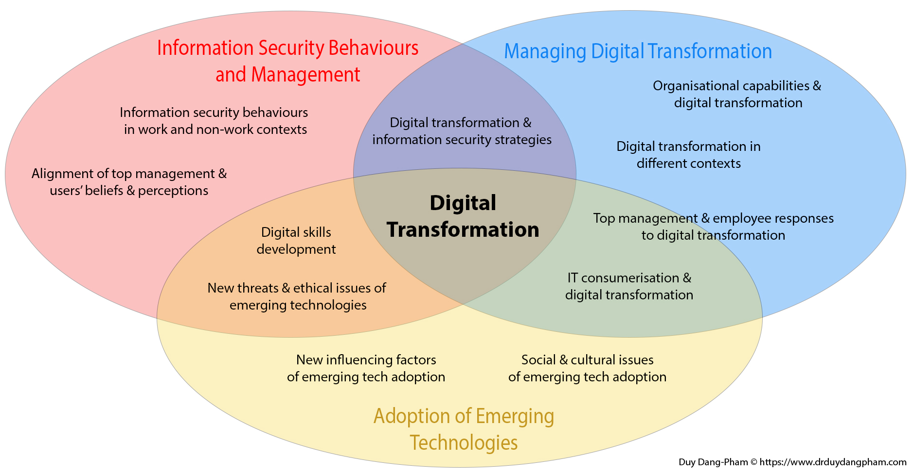

Research
Content
A short background
I completed my Ph.D. (Business Information Systems) degree at RMIT University (Australia) in May 2018, under the co-supervision of Dr. Siddhi Pittayachawan, Dr. Vince Bruno, and Professor Karlheinz Kautz. For my Ph.D. research, I proposed the use of social network analysis as an analytical and novel method to improve organizational information security, by identifying and leveraging organisational networks and key influencers within the workplace to increase information security awareness.
My thesis was an action research project which was conducted in collaboration with TTT Corporation, one of the largest companies in the construction and furniture fitting industries in Vietnam at that time. From my thesis, I published 14 research articles in journals such as Information & Management, Computers in Human Behavior, Computers & Security, and conference proceedings such as ACIS and PACIS, as well as various news articles.
With my deep interest in the Pragmatism philosophy in research, I employ both quantitative and qualitative methods in my research, and I am especially interested in social network analysis methods, and action research and design science approaches.
Research thrusts
Along with the development of new technologies such as cloud computing, big data analytics or artificial intelligence (AI), the ways businesses operate have been transformed significantly. These digital technologies have been integrated into all areas of a business, changing the way organisations operate and deliver values to its customers. In other words, businesses are embracing digital transformation to succeed in the digital age.
The concept of digital transformation refers to the technology-induced changes necessary for digital business, in which organisations experience a fundamental and socio-technical transformation. As such, digital transformation involves the manifold socio-technical phenomena and processes of using these technologies in broader individual, organisational and societal contexts.
In line with the above definitions, my current research program focuses on three interrelated areas/research thrusts under the common theme of Digital Transformation:
- Information Security Behaviours and Management
- Managing Digital Transformation
- Adoption of Emerging Technologies

Information Security Behaviours and Management
As organisations go through a digital transformation by integrating emerging technologies such as cloud computing, big data, and artificial intelligence into their current operations, new and sophisticated cyber threats are also brought to the workplace. An old and well-known adage in information security research - “users are the weakest link in the organisation’s security chain” - highlights the importance of improving the users’ capabilities to protect both themselves and their organisation, especially in the current context where the boundaries between the workplace and other non-work contexts have become blurred by the increasing adoption of Bring-Your-Own-Device (BYOD) and Work-From-Home (WFH) or Work-From-Anywhere (WFA) practices.
Since my Ph.D. research, I have been investigating concepts and phenomena related to information security behaviours (in work and non-work contexts), as well as the management practices to improve organisational information security. My current research foci in this area aim to advance theoretical knowledge of these concepts and phenomena, as well as to inform and improve current practices for protecting organisations against contemporary cyber threats, by addressing some broad research questions as follow:
- What are the factors that influence users’ proactive information security behaviours beyond compliance?
- How users perform information security behaviours in non-work contexts?
- What are the new issues and information security behaviours that result from the users’ adoption of emerging technologies such as big data and AI?
- How do organisations achieve alignment between employees and top management, in terms of their information security beliefs and perceptions?
- How do organisations balance the demands and priorities of digital transformation programs against those of organisational information security?
- How do digital transformation strategies influence information security strategies?
Recent publications and projects in the “Information Security Behaviours and Management” research thrust:
-
Identifying Information Security Opinion Leaders in Organizations: Insights from the Theory of Social Power Bases and Social Network Analysis
Computers and Security (2022) [ABDC A; SJR Q1] -
Explainable Information Security: Development of a Construct and Instrument
In the 31st Australasian Conference on Information Systems (ACIS 2020) (2020) -
Applying network analysis to investigate interpersonal influence of information security behaviours in the workplace
Information and Management (2017) [ABDC A*; SJR Q1] -
Information Security and People: A Conundrum for Compliance
Australasian Journal of Information Systems (2017) [ABDC A; SJR Q2] -
Why employees share information security advice? Exploring the contributing factors and structural patterns of security advice sharing in the workplace
Computers in Human Behavior (2017) [ABDC A; SJR Q1]
See the full list of my research publications here.
Managing Digital Transformation
Many organisations and practitioners struggle to grasp what conducting digital transformation entails, and seek and advice directions for how digital transformation programs, especially large and complex ones, can be executed. Lacking the understanding of digital transformation processes not only increases the risk of failing the transformation programs, resulting in high organisational and sometimes societal costs, but also limits knowledge of digital transformation strategies and how transformation efforts may differ across contexts e.g., large enterprises versus small and medium ones.
Despite the prominence of digital transformation, several challenges prevent organisations from effectively executing such transformation. First, digital transformation is a complex concept. Second, in some organisations, data is still utilised in organisational silos, thereby hindering strategic and digital transformation activities. Digital transformation is not about changing technology but about changing the way an organisation operates; new digital technologies should be leveraged to promote more creativity through e.g., information and computing capabilities that enable new forms of collaboration among networks of organisational actors. Third, the advancement of technologies has led to a shift in the business landscape across industries. Many companies are familiar with using technologies to improve their performance; however, as these technologies become more available and affordable, companies feel the pressure to rapidly transform themselves in an unprecedented manner or they will lose out eventually.
My “Managing Digital Transformation” research agenda focuses on addressing the key issues above, as well as other emerging topics that are currently discussed by the community of digital transformation practitioners and scholars. My digital transformation research often involves bringing practical impacts to stakeholders and organisations in both the private and public sectors, while advancing theories at the same time. For instance, my recent publications on the Digital Kaizen methodology for implementing digital transformation resulted from the collaboration with FPT Software, one of the largest IT outsourcing and digital transformation service providers in Vietnam. Together with my research collaborators, we adapted the Digital Kaizen methodology and proposed a process model for digital transformation, and we compared this model against the dynamic capabilities framework. Another example is our current research project funded by the Aus4Skills organisation, which aims to measure and uplift digital skills of citizens, businesses, and goverment officials in rural provinces in Vietnam.
Some of my broad research questions, with regard to part of this research thrust, are stated as follow:
- How do organisations implement digital transformation programs of different scales and in different settings (e.g., large enterprises versus small and medium enterprises)?
- What are the specific capabilities that organisations need to develop for digital transformation, and how do organisations build these capabilities?
- Do top management and employees have different perceptions of and responses to digital transformation? What about other stakeholders such as business partners and clients?
- How do organisational paradoxes affect digital transformation, and how do organisations respond to these paradoxes?
- What are the charateristics of and reasons behind unsuccessful/failing digital transformation programs?
Recent publications and projects of the “Managing Digital Transformation” research thrust:
-
Digital Kaizen at FPT Software: Principles and Practices for Digital Transformations
Digitalization Cases Vol. 2 (2021) -
Digital Kaizen: An approach for conducting stepwise digital transformation - Best Paper Award (1st Runner-Up)
In the 31st Australasian Conference on Information Systems (ACIS 2020) (2020) -
Improving Digital Competence of Local Authorities, Businesses, and Citizens in Gia Lai and Dak Lak Provinces: Towards a Digital Nation
Aus4Skills Australian Alumni Grants Fund Round 4 - VND 232,785,000 (approx. USD 10,150) (2022) -
Empowering the citizens: toward an inclusive digital nation
RMIT Vietnam Thematic Research Grant 2021 - USD 17,660 (2020)
See the full list of my research publications here.
Adoption of Emerging Technologies
Adoption of technologies is a topic of interest of many information systems researchers and it is arguably one of the most heavily researched areas. As a result of the rapid introduction of emerging technologies and IT consumerisation, there is a need for developing new knowledge of how individuals and organisations are selecting and using these technologies. Furthermore, research can look into the outcomes of such adoption, as well as the new issues that result from the adoption of emerging technologies.
There are many contemporary and important topics in the technology adoption area that demand attention of practitioners and scholars. For instance, the wearable device market has been expanding, together with developments in the Internet of Things (IoT) area, which creates new forms of interaction between users and technologies. These IoT devices, as well as AI and big data technologies, make themselves useful by leveraging on the users’ sharing of data. However, users are exposed to cyber security and privacy threats as they share more personal data intentionally or unintentionally. Moreover, as AI technologies gradually become an integral part of our daily lives, e.g., recommendation systems, chatbots and virtual assistants, questions are raised about the accuracy, usefulness, and ethics of the uses of these smart technologies to assist decision-making in different contexts, if not even make decisions on the users’ behalf. Furthermore, the digital skills gap between users also needs to be addressed: are people equipped with the necessary digital skills and ready for using the emerging technologies without being exploited and exposed to adverse consequences?
Some broad research questions that I and my collaborators are addressing in this “Adoption of Emerging Technologies” research thrust are stated below:
- How effective are current theories in explaining the user adoption of emerging technologies? What are the new factors that need to be taken into account?
- How do users create novel values from their adoption of emerging technologies?
- How does the user consumerisation of technologies influence their organisation’s use of technologies?
- How do organisations use emerging technologies to reinforce and innovate their operations?
- What are the societal and cultural issues that arise from the user adoption of emerging technologies, and how do we respond to these issues?
- What are the opportunities and challenges in developing digital skills and digital literacy for people, especially those in disadvantageous contexts?
Recent publications and projects of the “Adoption of Emerging Technologies” research thrust:
-
Categorizing young Facebook users based on their differential preference of social media heuristics: A Q-Methodology approach
Pacific Asia Journal of the Association for Information Systems (2021) [ABDC B] -
Learning analytics techniques and visualisation with textual data for determining causes of academic failure
Behaviour and Information Technology (2019) [ABDC A; SJR Q1] -
Investigating the diffusion of IT consumerization in the workplace: A case study using social network analysis
Information Systems Frontiers (2017) [ABDC A; SJR Q1]
See the full list of my research publications here.
Research grants (~USD 320,000)
| Year | Research grant | Members | Funding source | Value |
|---|---|---|---|---|
| 2022 | Investigating Approaches to Digital Transformation Implementation | Duy Dang-Pham, Karlheinz Kautz, Ai-Phuong Hoang, Lukas Parker | Innovation Proof of Concept Funding - RMIT University | AUD 8,960 (approx. USD 6,200) |
| 2022 | Digital Competence for Vietnamese Citizens: Towards an Inclusive Digital Nation | Ngoc Pham, Trung Nguyen, Duy Dang-Pham, Ai-Phuong Hoang, Hiep Pham | D3 Research Activity Fund Scheme - RMIT University | AUD 5,000 (approx. USD 3,500) |
| 2022 | Improving Digital Competence of Local Authorities, Businesses, and Citizens in Dak Nong and Binh Phuoc Provinces: Towards a Digital Nation | Trung Nguyen, Duy Dang-Pham, Ai-Phuong Hoang, Ha Tran | Aus4Skills Australian Alumni Grants Fund Round 4 | VND 232,785,000 (approx. USD 10,150) |
| 2021 | Modeling vaccine-related information to create hybrid information hubs for people with disabilities in Vietnam and Indonesia | Abdul Rohman, Duy Dang-Pham | Vaccine Confidence Fund | USD 221,840 |
| 2020 | Empowering the citizens: toward an inclusive digital nation | Trung Nguyen, Ai-Phuong Hoang, Burkhard Schrage, Long Nguyen Van Thang, Duy Dang-Pham | RMIT Vietnam Thematic Research Grant 2021 | USD 17,660 |
| 2020 | Drivers of the employees’ information security compliance: novel insights from employee engagement and empowerment theories | Duy Dang-Pham, Quang Tran, Ai-Phuong Hoang, Long Nguyen Van Thang | RMIT Vietnam Internal Research Grant Scheme 2020 | USD 8,300 |
| 2020 | The influence of Corporate Social Responsibility Activities on Brand Love and Purchase Intention: The empirical study of emerging brands in Vietnam | Long Nguyen Van Thang, Rajkishore Nayak, Duy Dang-Pham | RMIT Vietnam Internal Research Grant Scheme 2020 | USD 8,500 |
| 2017 | Network Analysis of Research Collaborations between ACIS participants (1990 to 2016) | Karlheinz Kautz, Duy Dang-Pham | Australian Council of Professors and Heads in Information Systems | USD 5,000 |
| 2017 | Understanding end users’ online information behaviours and development of an assessment for online literacy: an empirical study in Vietnam | Mohammadreza (Reza) Akbari, Mathews Nkhoma, Siddhi Pittayachawan, Duy Dang-Pham | RMIT Vietnam Internal Research Grant Scheme 2017 | USD 5,524 |
| 2016 | A Social Network Analysis Approach to Manage Information Risks and Sharing for Supply Chain Performance | Jaime Calberto, Leon Kok Yang Teo, Duy Dang-Pham, Mathews Nkhoma | RMIT Vietnam Internal Research Grant Scheme 2016 | USD 6,995 |
| 2014 | Developing a KPI for measuring client’s satisfaction of construction projects in Vietnam | Siddhi Pittayachawan, Ferry Jie, Duy Dang-Pham | RMIT University Asia Research Cluster Grant | AUD 8,000 |
| 2014 | Organisation’s mobile security behaviours | Mathews Nkhoma, Siddhi Pittayachawan, Duy Dang-Pham | RMIT Vietnam Internal Research Grant Scheme 2014 | USD 9,500 |
| 2013 | User’s perception of online social networks: A Q-methodology approach | Mathews Nkhoma, Duy Dang-Pham, Siddhi Pittayachawan | RMIT Vietnam Research Poster Competition Prize | USD 2,500 |
| 2012 | Information security measures investment by SMEs | Mathews Nkhoma, Duy Dang-Pham | RMIT Vietnam Internal Research Grant Scheme 2012 | USD 8,000 |